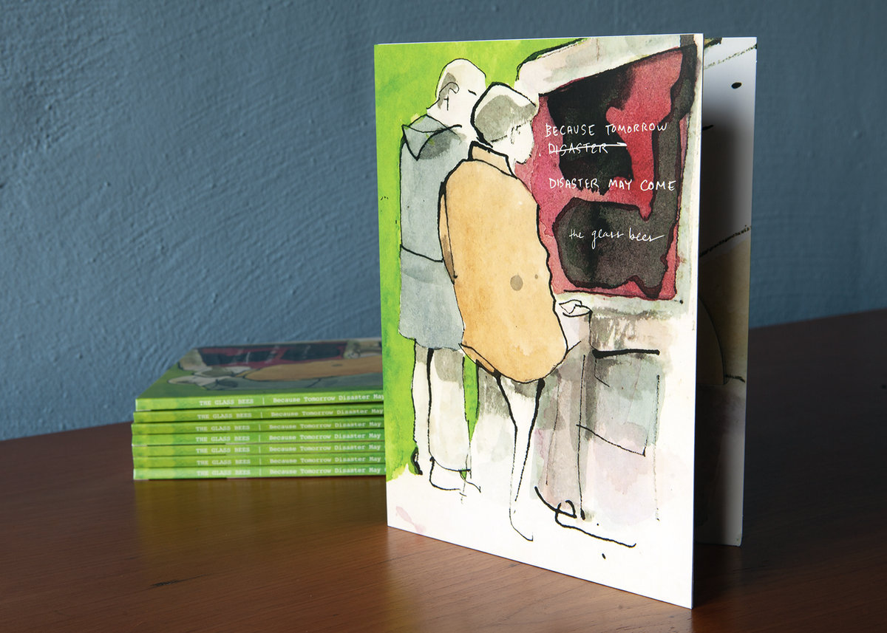
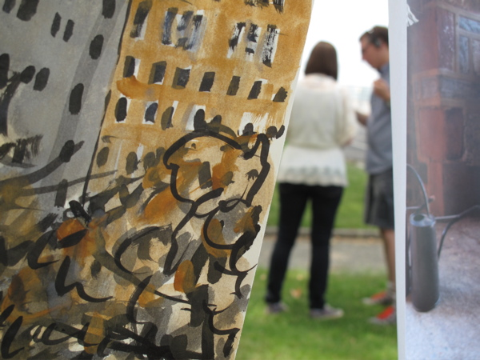
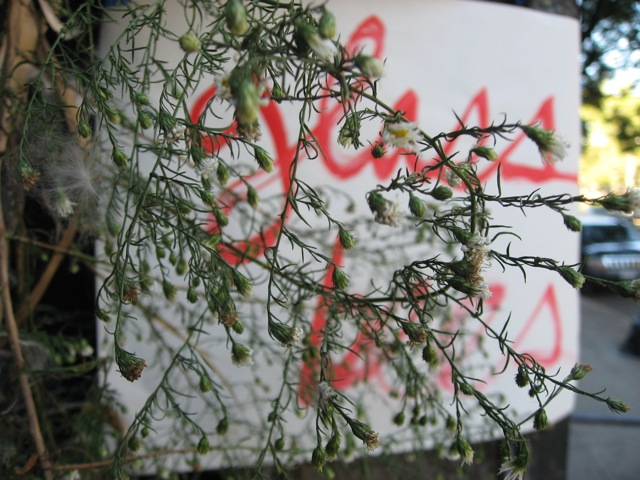
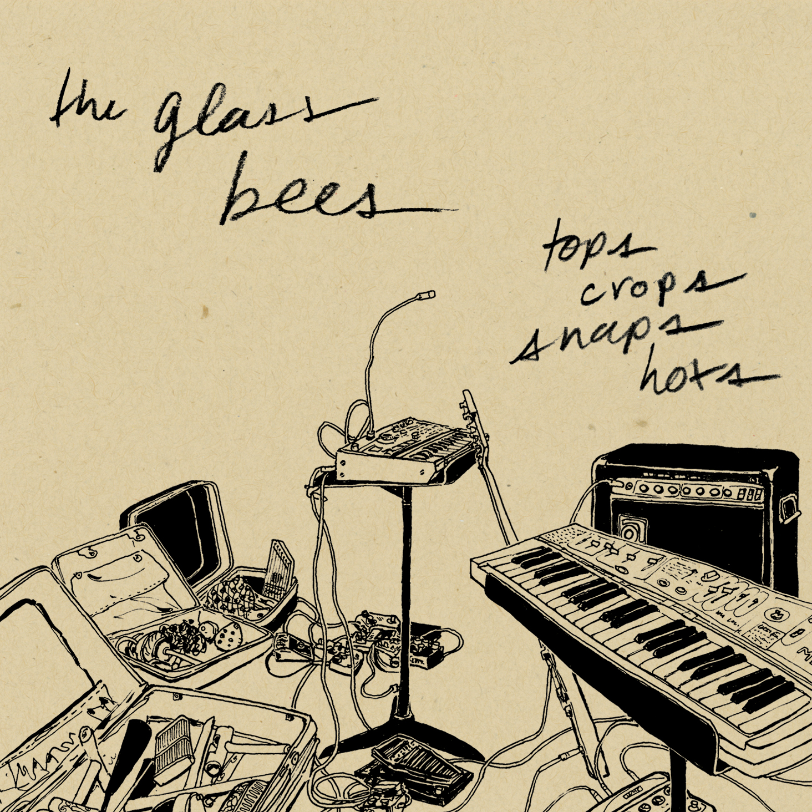

Begun in 2006 to create improvised music, the Glass Bees evolved into a malleable platform for transmedia art, including installation, video, field recording, sculpture, drawing, photography, painting, text, performance, historical research, and psychogeographical exploration.
The Glass Bees performing at Monkeytown, Brooklyn, July 14, 2009. (Photo: Joshua Howard.)
Because Tomorrow Disaster May Come (2023)
Limited-edition deluxe CD and digital album that compiles tracks recorded between 2008 and 2011. Booklet features an essay as well as archival photos and artwork.
History & Practice (2005-2023)

The complete adventures of the Glass Bees as a multimedia timeline.
Unique Places of Death (2012)

Gallery installation featuring paintings, found objects, and a sound collage scavenged from locations identified in the burial records of Hart Island, New York City’s potter’s field. (2012)
Reading Governor's Island (2010)
Site-specific interactive multimedia performance combining field recordings, paintings, photos, and audience-contributed spoken word to investigate Governors Island’s multi-layered history and cultural context.
Venice Brooklyn (2009)
After a morning spent exploring sections of the southern Brooklyn coastline that are vulnerable to extreme flooding due to climate change, the resulting sound recordings, photographs, watercolor sketches, and collected objects were presented in an improvised multimedia performance.
Tops Crops Snaps Hots (2008)
Compiles and sequences highlights from the group's earliest recordings into a continuous mix.